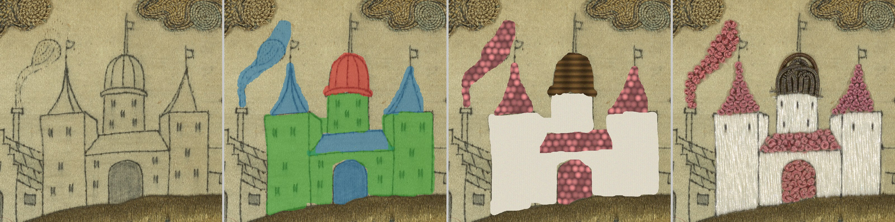
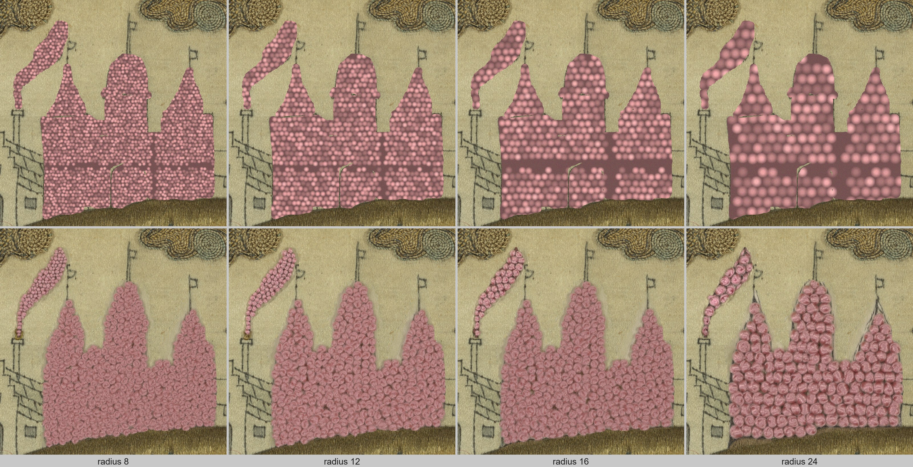
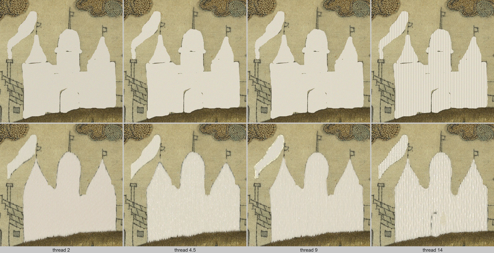
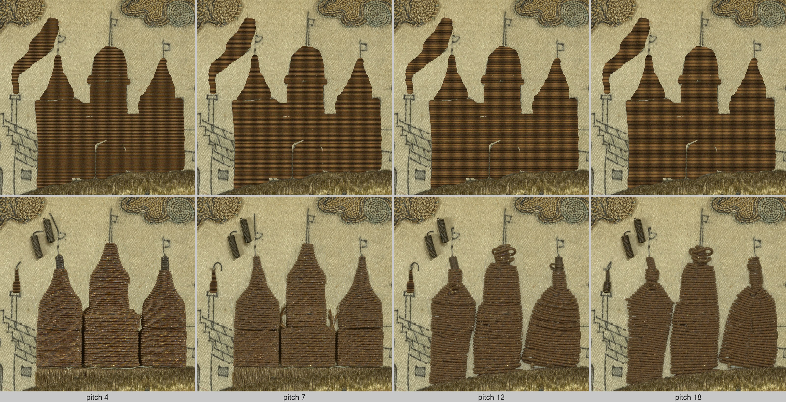
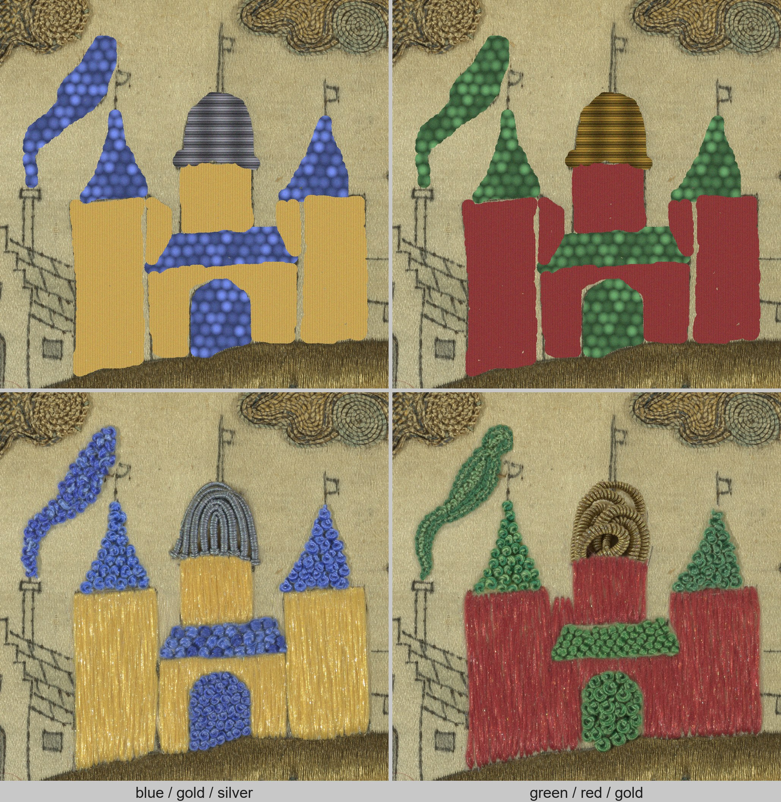
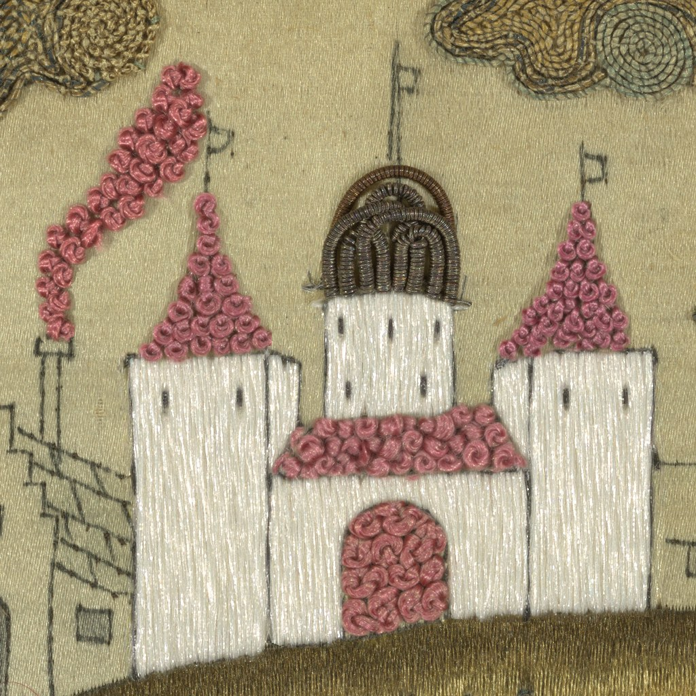

A simulated loss on an embroidered casket panel: design underdrawing → per-stitch masks → procedural init → generative reintegration.
Losses in embroidered heritage textiles are conventionally reintegrated by hand, stitch by stitch, or left visible. We present a digital reintegration method that is deliberately independent of any single generative model. Small LoRA adapters encode individual stitch structures — satin stitch, french knot, silk purl — from photographs of 17th-century English embroideries, and are deployed on inpainting and instruction-edit variants of contemporary diffusion model families. Each loss is first filled with a cheap procedural texture init that has the right bumpiness and periodicity but no realism; a masked denoise pass then restyles it into the prescribed stitch, so the model refines a structurally-correct starting point rather than inventing one.
Verification happens in surface-normal space: a Marigold monocular normal estimator fine-tuned on 11,813 RTI tiles of the same corpus converts each fill to a normal map, and seven training-free surface descriptors are compared by Mahalanobis distance to the descriptor cloud of real stitches of the prescribed type. A faithful fill reproduces the craft surface structure of the stitch type, not the exact thread positions of the lost original. Without the stitch LoRA, fills drift from the real-stitch cloud as the loss grows; with it, they stay close — and the benefit is largest for weakly image-conditioned model variants. The whole pipeline runs on a single consumer GPU.
Eight pre-generated fills per loss region on the castle piece. Click a region to cycle its variants, then download your composite.
Open the pickerUpload an image, mark losses as layers with box / brush / magic-wand tools or by quantising colours, pick a stitch (or your own LoRA) for each, preview procedural fills in the browser, and export a job bundle for Colab or a local GPU.
Open the mask toolRun SDXL + the stitch LoRAs on a free Colab GPU — on the castle piece or on your own exported image and masks. Free locally too, with a ~12 GB GPU.
Open in ColabThe procedural init exposes the parameters a conservator would reason about — knot size, satin thread width and angle, purl coil pitch, thread colour — and the denoise pass preserves them, so the same LoRA yields controllably different fills. Top rows: procedural inits. Bottom rows: generated fills.

French knot radius 8 → 24.

Satin thread width 2 → 14.

Silk purl coil pitch 4 → 18.

Colourways: the same masks and prompts with different procedural init colours.

The castle piece reintegrated: per-region variants composed with the picker, design lines carried through the init.
@inproceedings{reintegrating-losses-2026,
title = {Digitally Reintegrating Losses in Heritage Embroidery},
booktitle = {Eurographics Workshop on Graphics and Cultural Heritage (GCH)},
year = {2026},
note = {To appear}
}